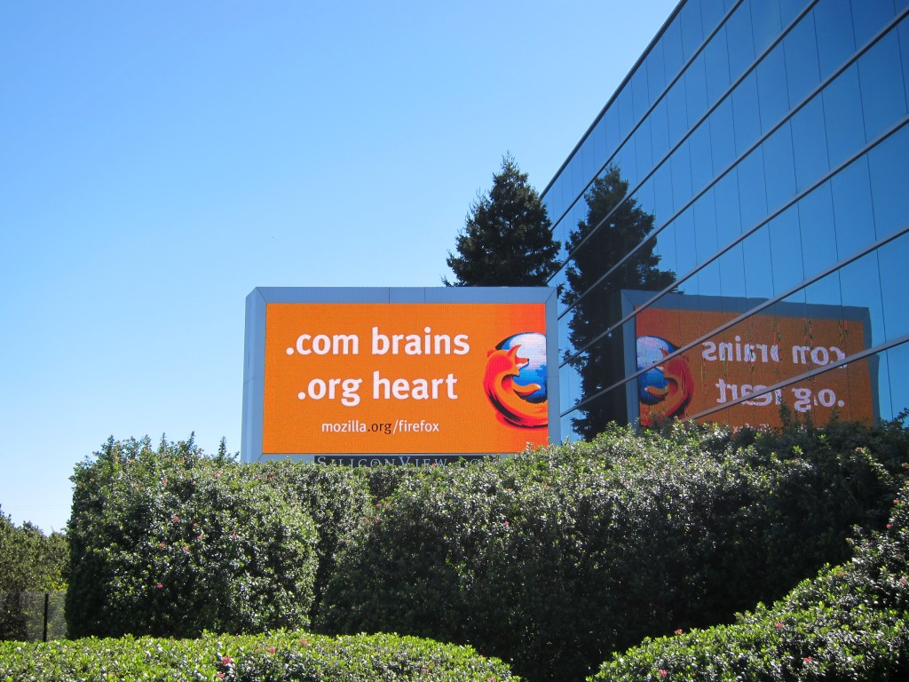

7月302012 只要出問題， C4炸藥 gdb 都能搞定 一早打開電腦，更新一下 code，一如往常build 完 update 到手機上去，跑了一陣子之後畫面閃了一下，Firefox OS (以下簡稱專案名B2G) 該不會重啟了吧！為了證實我們的疑慮，我們開啟 log 來看看，結果在 log 裡面看到 “Fatal signal 11 (SIGSEGV)...
7月232012 Firefox OS (B2G) porting 流程概談 目前 Firefox OS (以下簡稱專案名B2G) 已經支持的設備包括： Samsung Galaxy S2 I9100 (以及兩款 SGS2 variants：I9100G，Skyrocket) Nexus S Maguro/Akami Emulator 除此之外，還有好幾款設備正在進行 por...
7月162012 Firefox OS (B2G) – 改變你，改變世界！  相信關心「謀智台客」的各位對於 Firefox OS (Boot to Gecko, B2G 專案) 都有基本的認識了（還有問題的可以趕快閱讀由 timdream 哥發表過的「關於 B2G 計畫，以及 Web 的誤解」），但這麼龐大的專案會是兩三個小伙子躲在車庫就搞出來的嗎？ 答案當然不是！其實主要...
7月92012 Gecko內部探索 – 如何使用 Thread 俗話說得好： 每個偉大系統背後都有個好用的 Thread 機制，Gecko 也不例外，本篇台客文就是介紹在 Gecko 裡 thread 的一些基本使用方式及相關的 class 。 首先， Gecko 內部的 thread 基本上是使用 nsIThread 這個介面，透過 NSNewThread 來...
7月22012 Meta-programming in JavaScript 如大家所熟知，JavaScript 是一種具有許多特性的動態語言，能應用於 metaprogramming ，換句話說，其可以操作程式及改變程式。Metaprogramming 的能力在於動態 (runtime) 改變和定義程式的行為，具有高效率的表達程式結構和邏輯的優點。然而，metaprogra...